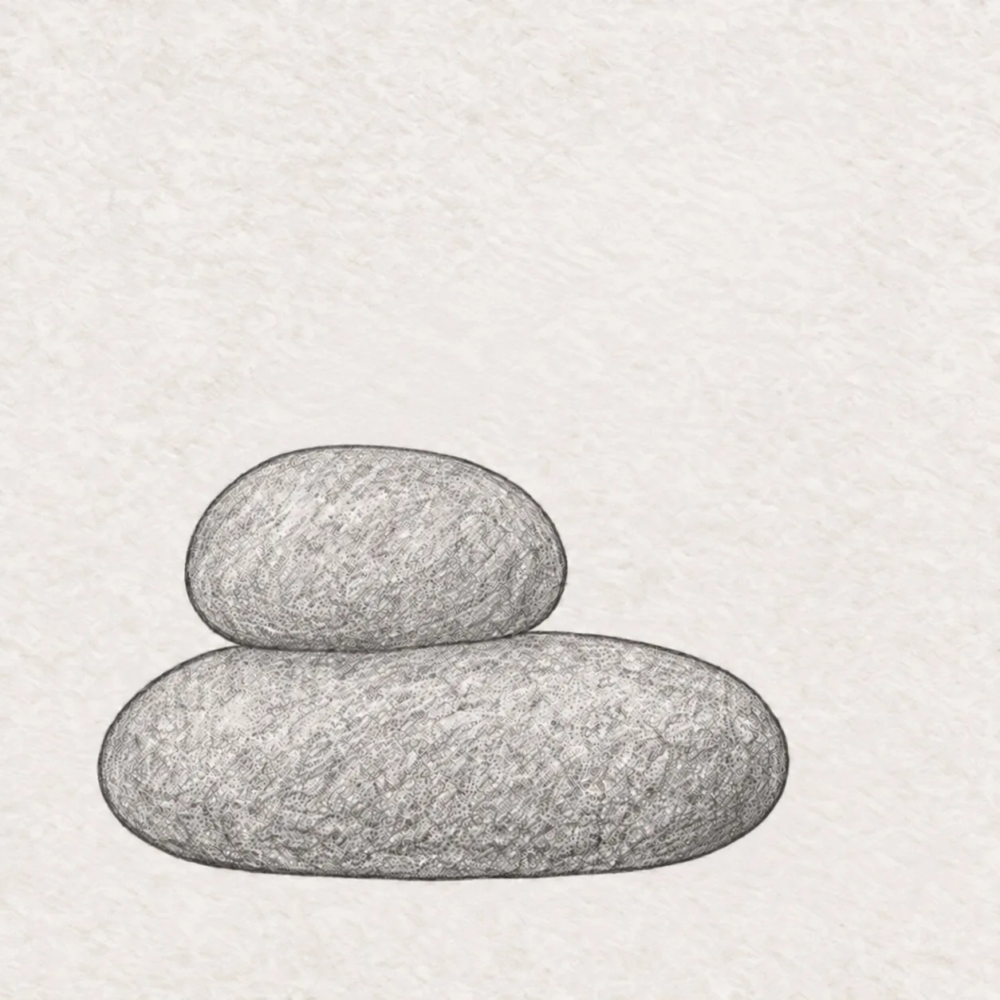
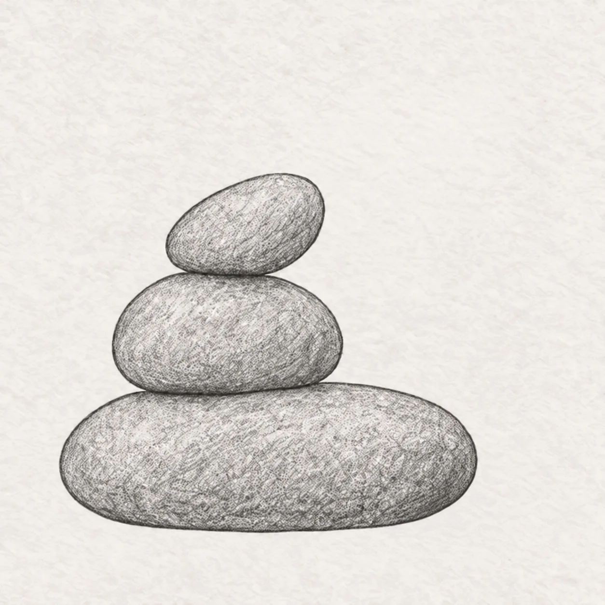
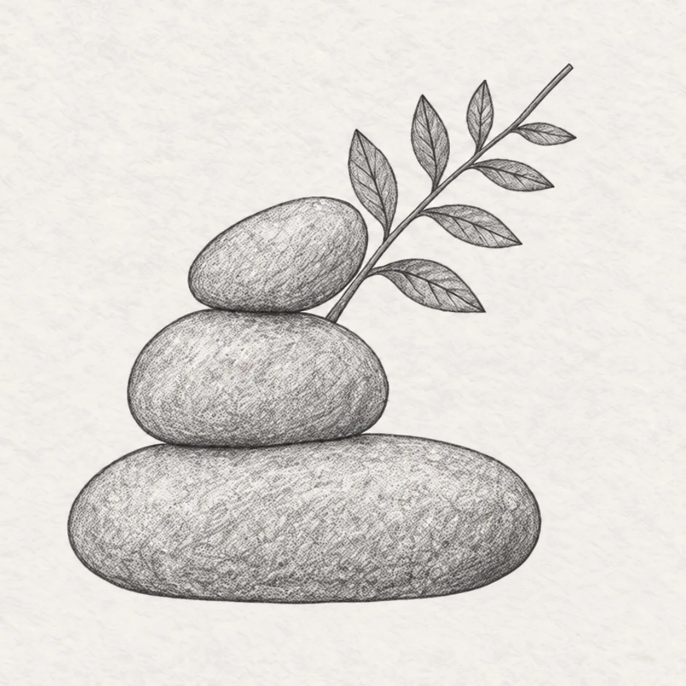
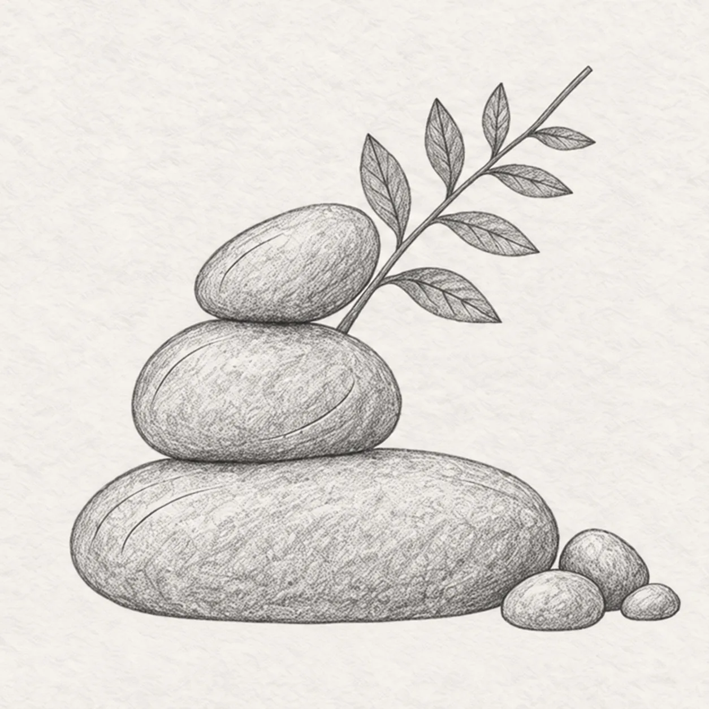
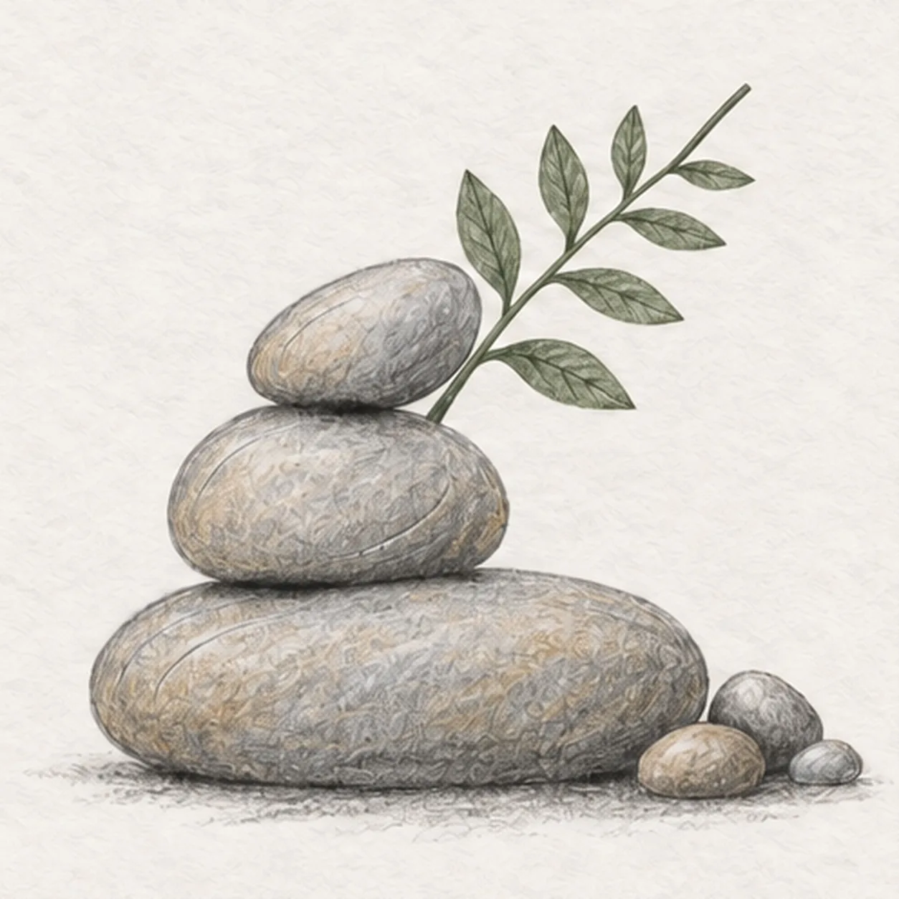

From the archive
Let's draw stacked river stones
Treat this as one small practice round: build the subject lightly, notice the shapes, then darken only the lines that help the finished sketch.
-
01

Stack the first two stones
Draw a wide flattened oval low on the page, then overlap its upper edge with a smaller rounded stone. Keep both silhouettes slightly uneven and let the middle stone sit just left of center.
Sketch tip: Ghost each long curve twice before touching down. Compare the two outer edges so the smaller stone feels balanced instead of pasted onto the base.
-
02

Balance the top stone
Place one small oval stone on the middle stone, leaning slightly right. Darken a short contact accent beneath the top stone, another beneath the middle stone, and one under the broad base.
Sketch tip: Trace the stack from top to ground with your finger. All three dark accents should sit directly beneath the weight they support.
-
03

Grow the fern sprig
Start behind the left side of the middle stone and sweep one stem up toward the upper right. Attach exactly eight alternating leaflets along it, making them gradually smaller near the tip.
Sketch tip: Count four leaflets on each side. Let every leaflet point away from the stem while the bare tip keeps the sprig light.
-
04

Add stone rhythm and pebbles
Add a few short curved surface arcs across each stone, following its roundness without filling the forms. Group exactly three small pebbles near the lower-right edge without touching the stack.
Sketch tip: Turn the page to pull the arcs comfortably. Keep the pebbles unequal so the group feels natural, then count all three.
-
05

Set the quiet values
Lay one broken graphite shadow beneath the stack and pebbles. Glaze the three stones with separate cool-gray and warm-ochre tones, then tint the stem and eight leaflets muted green while leaving paper highlights open.
Sketch tip: Use the side of the pencil and follow each rounded form. Leave the lightest paper on the upper-left faces so the stones still feel smooth.
-
06
Deepen the natural finish
Deepen the three contact accents and existing contour arcs with 2B graphite. Reinforce the established gray, ochre, and muted-green color lightly, add fine veins inside the eight existing leaflets, and soften the existing broken shadow without adding new forms.
Sketch tip: Count three stones, eight leaflets, and three pebbles, then stop while the paper tooth and open highlights remain visible.